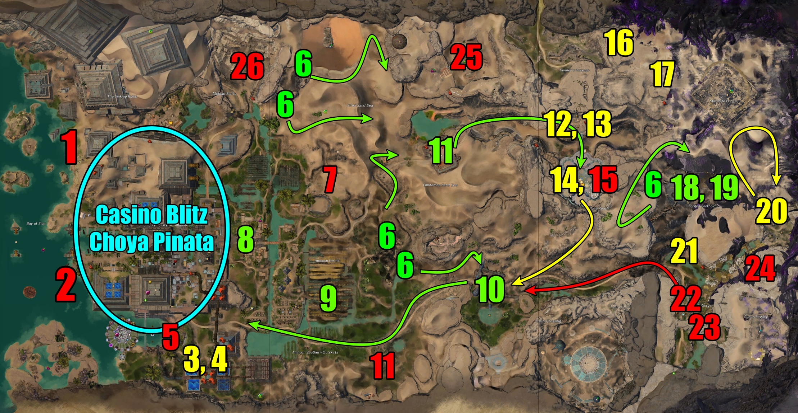
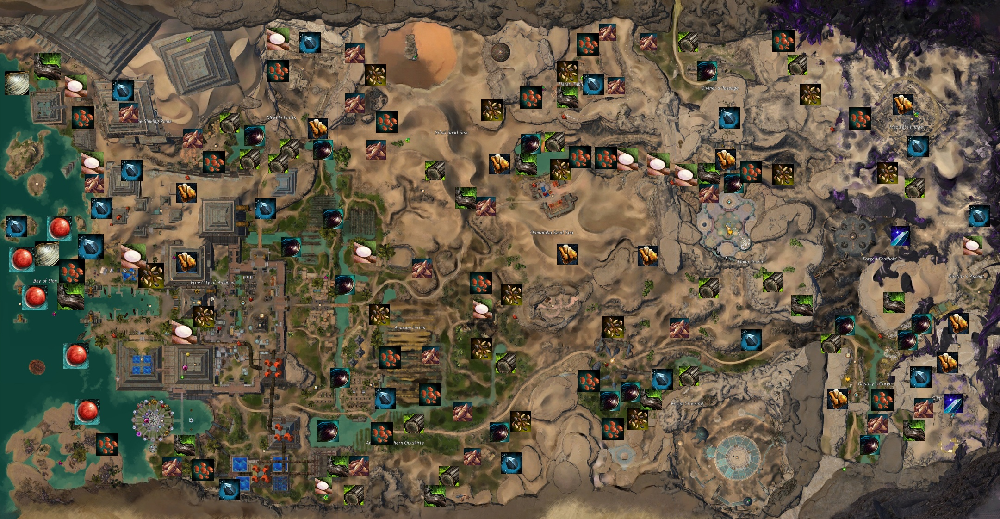
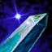
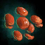
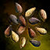

Farming
Potential Gold Per Hour
| Farm Type | Farm | Benchmark |
|---|
Crystal Oasis as a whole is a fantatic map with many different dynamic events. Out of all the PoF maps, it has the most Forged events. These events are the secret to this farm as they provide Forged champions. These champions provide Battered Forged Components which are champion bags that provide multiple pieces of green+ Unidentified Gear and a chance to drop recipies and skins that potentially could be worth a couple gold.
Method:
Using my timer page, I farmed events on the west side of the map mainly. This includes events such as: 4 of the Raiding Party (north/south), Refugee (south), and the Farm. Due to their low cooldowns, it's possile to rotation between these events without having to need to go to the other parts of the map. To get the best results, it's possile to sit at the spawn location at each of the Raiding Party events before they spawn so they can upscale right away. This makes it easier to spawn more than 1 champion. The Raiding Party events spawn at each gate of the Forged camps.
I generally start my farm an hour before Pinata. I include Pinata because the Choya Pinata is valuable in the sense that it drops 3 guaranteed rare Unidentified Gear, Amalgamated Gemstone, and a chance to drop the Confetti Infusion (and it's awkward not to do it). During the first/second rounds of Casino Blitz, I tell the squad to grab a few coins. For each round, we do the bounties Zelke and Legendary Choya. There's also many caches layed out through the cities so I try to place markers on their locations.
Disclaimer:
For me, I did take bounty requests. If I did, I would try to include them in my rotation (do them if they are nearby the next event). Obviously this took a slight hit in the gold per hour, but I think it's realistic to put it in the benchmark because there are a lot of bounties required for collections and achievements. There's always going to be a request for something or two, espcically Facet. If it's Facet, I do it at the end because it's out of the way.
Criteria
Great
Meh
Avoid
Events

Recommendation: Priority of Events
6, 10, 9, 8, 18, 19, 14, 12, 13, 21, 3, 4, 16, 17, 20, 22, 24, 7, 5, 1, 2, 5, 11, 25, 15, 23
| # | Qty | Name | Description | Upscale | Extra |
|---|---|---|---|---|---|
| 1 | 1 | Help Nasim gather fish | Kill wildlife in the water and turn in materials to the NPC | ||
| 2 | 1 | Recover the sunken Consortium cargo | Gathering materials for the NPC | ||
| 3 | 1 | Defend the Water Authority plant from Hamaseen saboteurs | Defending NPCS from Hamaseen enemies. It's either this event or #4 that can spawn here | ||
| 4 | 1 | Defend the Water Authority facility workers as they repair damage water pipes | Defending NPCS from various mobs | Possible champs | |
| 5 | 1 | Help repair leaks in the Amnoon Water Authority pipes | Killing oozes to fix pipes. None of the mobs drop loot nor does it upscale. | ||
| 6 | 5 | Defeat the Forged raiding party | A pack of Forged will roam an area. A second wave will spawn after killing the initial pack | Possible champs | |
| 7 | 1 | Help Talib recover his escaped sand shark pups | CCing Sand sharks and throwing in the sand pit | ||
| 8 | 1 | Stop the stampede of choya before they break down the gate | All the choyas! | ||
| 9 | 1 | Defend the Amnoon farmworkers form the Forged | Multiple waves of Forged. Two waves on the top and bottom of the east part of the event | Possible champs | |
| 10 | 1 | See the refugees safely through to Amnoon | Multiple waves of Forged in this escort | Possible champs | |
| 11 | 1 | Help Priest Bashshar get healers and medical supplies | Short escort with 3 waves of Forged | Possible champs | |
| 12 | 1 | Defend the village of Kweli from the Forged | This happens a minute after event #11. Defend for 6 minutes from Forged. Does not upscale well with large squads | Possible champs | |
| 13 | 1 | Reclaim the village of Kweli from the Forged | Happens if event #12 fails. Capturing the village from Forged. Does not upscale well with large squads | Possible champs | |
| 14 | 1 | Escort refugees from the Temple of Kormir to the southern way station | Takes a minute to start up. 3 waves of Forged enemies, but not a lot of total mobs | Possible champs | |
| 15 | 1 | Stop the Zaishen from desecrating the Temple of Kormir | None of the mobs drop EXP or loot | Possible champs | |
| 16 | 1 | Defeat the champion (Wurm) | Random champion wurm that throws that lots of poop AoEs. Somewhat difficult without some peeps | 1 Guaranteed champ | |
| 17 | 1 | Defeat the Champion Branded hydra | Champion hydra, but runs away after taking a certain amount of damge. Stop it by mounting up and having at least 5? people use their special skill | 1 Guaranteed champ | |
| 18 | 1 | Disrupt the Forged ritual and destroy the crucible | Start the event from the cliffs, then CC ritualists, then the crucible | Possible champs | |
| 19 | 1 | Kill the Forged commander | Happens after event #18. A single Forged champion | 1 Guaranteed champ, possible champs | |
| 20 | 1 | Help Ashwah search for his missing daughter in the Brand | Multiple waves of Branded mobs | Possible champs | |
| 21 | 1 | Drive back Balthazar's forces before they wear down | Defending an area full of Forged | Possible champs | |
| 22 | 1 | Help the refugees each the oasis settlement | Escorting NPCs, but there's barely any mobs that spawn | ||
| 23 | 1 | Scavenge supplies form the clifftop Zephyrite ruins | Gathering materials for the NPC | ||
| 24 | 1 | Rescue refugees forced into labor in the Zephyrite mine | Rescuing refugees and escorting them away from Forged | ||
| 25 | 1 | Help Olaf recover buried artifacts | Gathering materials for the NPC | ||
| 26 | 1 | Help Salima gather stone and protect quarries from choyas | Escorting NPCs and killing choyas |
Casino Blitz
There are 3 rounds for players to collect at least 150 Casino Coins. After 3 successful rounds, a Choya Pinata will spawn. Catch it before it escapes! It is possible to fail one round to spawn the Choya Pinata, but there still needs to be 3 successful runs. If a round fails, then that round repeats again.
The Choya Pinata offers a Crystal Oasis Hero's Chest that grants 3 guaranteed rare Unidentified Gear, a choice of either:
- Amalgamated Gemstone
- Pulsing Brandsparks (2)
- Intact Mosaic
- Pile of Elonian Trade Contracts (100)
- Recipe: Zehtuka's Harrier Inscription
There's a super rare chance for a Confetti Infusion to drop.
Nodes

Criteria
High Qty
Meh Qty
Low Qty
| Type | Node | Info | Cooldown | |
|---|---|---|---|---|
| Ore | 
|
Mithril Ore | Chance to receive crystals | 1 hour |
| Ore | 
|
Orichalcum Ore | Chance to receive rare orbs | 24 hours |
| Ore |  | Quartz Crystal | There's a rich node on the southeast corner of the map | 1 hour/24 hours |
| Log | 
|
Mebahya Sapling | Chance to receive Foxfire Clusters, Hidden Troves (crystals), or rare Palm Lumber Cores | 1 hour |
| Log | 
|
Ancient Sapling | Chance to receive Foxfire Clusters, Hidden Treasures (orbs), or rare Palm Lumber Cores | 24 hours |
| Plant | 
|
Pile of Flax Seeds | Chance to receive Flax Fiber, rare Flax Blossom | 1 hour |
| Plant |  | Lentils | 1 hour | |
| Plant | 
|
Mussel | Chance to receive the very rare Freshwater Pearl | 1 hour |
| Plant |  | Cluster of Desert Herbs | Chance to receive the Variental Seseme Seeds, Chili Peppers, Coriander Seed, Sage Leaf, and Sesame Seed | 1 hour |